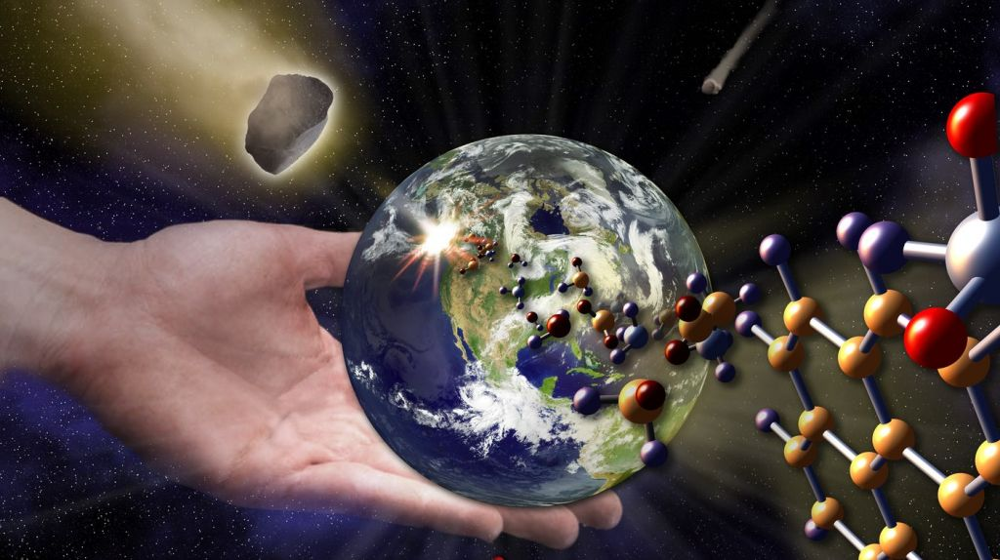

Виникнення життя на землі
Вчені вже давно розмірковують над, чому тварини так довго з'являлися на Землі. Але, здається, причиною пізнього виникнення життя на Землі ...
Читати далі

Доведено спонтанне поява життя
Вчені Брістольського університету (Велика Британія) за допомогою математичної моделі довели, що до появи ...
Читати далі